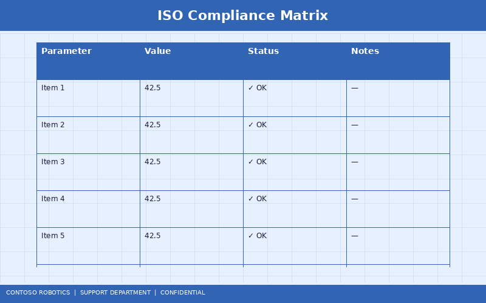
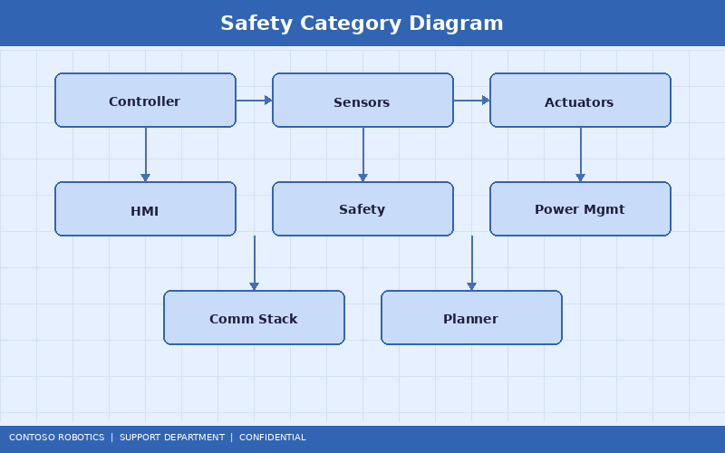

The Contoso Robotics CoBot Pro 500 and CoBot Pro 700 are designed, tested, and certified to meet the most stringent international safety and cybersecurity standards for collaborative robots. This document provides an overview of the applicable standards, certification details, and the risk assessment methodology used during the design process. For a condensed marketing summary and certification badge artwork, refer to the Safety Certification Factsheet available from Contoso Robotics Marketing.

| Standard | Scope | CoBot Pro Status |
|---|---|---|
| ISO 10218-1:2011 | Safety requirements for industrial robots — Robot | Certified (TÜV SÜD, Cert. #RS-2024-00142) |
| ISO 10218-2:2011 | Safety requirements for industrial robots — Robot system and integration | Integration guidelines provided |
| ISO/TS 15066:2016 | Collaborative robot safety — Power and force limiting | Certified (TÜV SÜD, Cert. #TS-2024-00089) |
| IEC 61508:2010 | Functional safety — Safety Controller SC-100 | SIL 3 certified (TÜV Rheinland, Cert. #FS-2024-01255) |
| ISO 13849-1:2023 | Safety-related parts of control systems | PL e, Category 4 |
| IEC 62443-4-2:2019 | Industrial automation cybersecurity — Component requirements | SL 2 certified (ISASecure, Cert. #CS-2024-00312) |
| CE Marking (EU) | Machinery Directive 2006/42/EC | Compliant (DoC available on request) |
ISO 10218-1 defines safety requirements for the robot itself, while ISO 10218-2 covers the robot system and its integration into a workcell. The CoBot Pro satisfies ISO 10218-1 through:
For ISO 10218-2 compliance, integrators must perform a risk assessment for the complete workcell. Contoso Robotics provides an integration checklist and risk assessment template (available on the Partner Portal).
ISO/TS 15066 specifies the safety requirements for collaborative robot systems where the robot and human share the workspace simultaneously. The CoBot Pro supports all four collaborative operation modes defined in ISO/TS 15066:

The SC-100 enforces the biomechanical force and pressure limits from ISO/TS 15066 Table A.2. Default values are configured for the most conservative body region (skull/forehead). Integrators may adjust limits per the specific body regions at risk in their application:
| Body Region | Max. Transient Force (N) | Max. Quasi-Static Force (N) | Max. Pressure (N/cm²) |
|---|---|---|---|
| Skull / Forehead | 130 | 65 | 30 |
| Chest | 140 | 70 | 25 |
| Hand / Finger | 140 | 70 | 30 |
| Upper arm | 150 | 75 | 28 |
| Lower legs | 210 | 105 | 40 |
The CoBot Pro is certified to IEC 62443-4-2 Security Level 2 (SL 2), which provides protection against intentional violation using simple means with low resources. Key security features:
The CoBot Pro carries the CE mark in compliance with:
The Declaration of Conformity (DoC) is available upon request from Contoso Robotics Sales or can be downloaded from the Partner Portal. Note that CE marking applies to the robot as a partly completed machine. The integrator is responsible for the CE marking of the complete machine installation per the Machinery Directive.
Contoso Robotics follows the risk assessment methodology defined in ISO 12100:2010:
Integrators must perform their own risk assessment for the complete robot system, including the end effector, workpieces, and workcell layout. Contoso Robotics provides a risk assessment template on the Partner Portal.
For the technical implementation of safety functions in the SC-100, refer to the Safety Controller Firmware in the Engineering documentation. For printable certification badges and compliance summary suitable for customer-facing materials, refer to the Safety Certification Factsheet available from Contoso Robotics Marketing.
Document version 4.2.0 | Last updated: 2025-01-15 | Contoso Robotics Technical Support